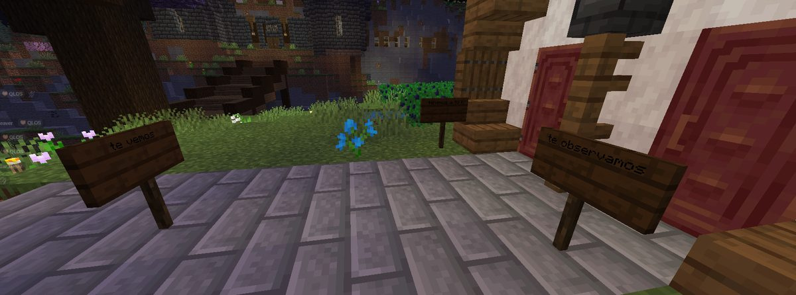
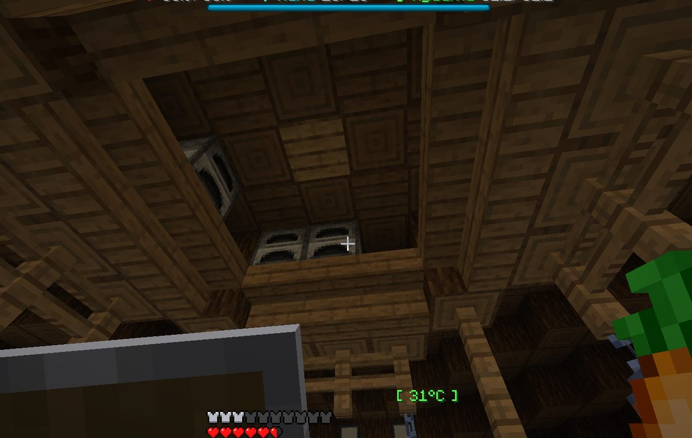
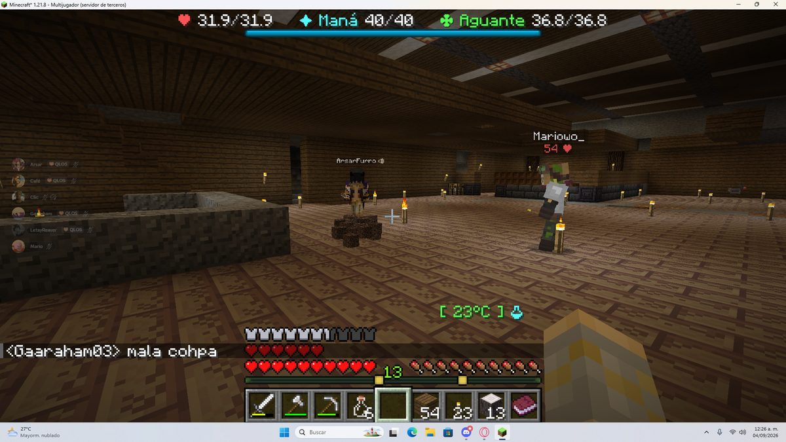

Boletín Oficial del Ayuntamiento del Reino · Se informa, no se alarma
EL HERALDO DEL REINO
Número 133 de septiembre de 2026Tarde del jueves 3 de septiembre a la mañana del viernes 4
EL DESMENTIDO LLEGÓ ONCE HORAS ANTES QUE LA DENUNCIA
El Ministro juró que él jamás robaría un Cacahuate a las once y media de la noche. El comunicado sobre las dos tarjetas no se leyó hasta la mañana siguiente. Esta Oficina hace constar que nadie le había preguntado.
Redactado por la Oficina de Prensa del Ayuntamiento
PORTADA
«Yo soy legal, yo nunca robaría un Cacahuate», dijo el Ministro once horas antes de que se supiera nada
A las 23:31 del jueves, en la herrería, el Ministro Pan mantenía una conversación sobre
el maestro Lolo y sobre si conviene o no meterlo en la cárcel. En mitad de esa conversación, sin
que viniera a cuento y sin que nadie se lo hubiera preguntado, el Ministro hizo la siguiente
declaración: «lolo es peor que yo, y yo soy legal, yo nunca robaría un cacahuate».
TitanWarhammer, que estaba delante, preguntó entonces si la extorsión contaba como robo. El
Ministro contestó que no. TitanWarhammer opinó que debería. El Ministro repitió que no creía.
A las 10:16 de la mañana siguiente —once horas y cuarenta y cinco minutos después— el
Centro de Inteligencia del Reino hizo público que había interceptado dos tarjetas que
llevaban meses cargando gastos al presupuesto vecinal. Por orden de aparición: 12.400 Cacahuates
en el parque de atracciones, 340 en tacos, dos Spiderman y un payaso para una fiesta particular,
45.000 en un óleo abstracto «inspirado en los Power Rangers» y seis alargadores de talla
L. El sobre venía rotulado a mano: «A la atención del ministro P.»
A las 10:34, dieciocho minutos después del comunicado, el Ministro Pan volvió a hablar
sin que nadie le hubiera nombrado. Primero aportó una hipótesis: «Será del ministro tung tung
sahur, por ahí he oído que le llaman Ministro P. Sino, no se me ocurre otro». Y a
continuación, en un mensaje aparte, añadió: «Yo nunca robaría un cacahuate del
contribuyente».
Esta Oficina quiere dejar constancia de que al Ministro no se le acusaba de nada, ni en
el comunicado, ni en la conversación de la herrería, ni en ningún otro papel que obre en este
archivo. La corporación investiga la titularidad de las tarjetas por orden alfabético, tal
y como se acordó, y a día de hoy va por la B. Se ruega paciencia al vecindario.
ADMINISTRACIÓN
Dos candidaturas a jefe de policía de un cuerpo que esta corporación no ha creado
El cartel de campaña de kum4shiro, repartido a las 04:56. El primer renglón promete el fin de los robos. El último promete vigilancia permanente. Esta Oficina no ha sabido decidir cuál de los dos tranquiliza más.Archivo Municipal · pase el ratón para revelarla
La jornada empezó con kum4shiro pidiendo el voto casa por casa. A las 14:26 se lo
pidió a _Cafecito_, que contestó que llevaba días fuera, que no le había visto todavía el potencial
y que antes quería «saber cuáles son todos los candidatos para ese puesto» — una cautela
que en este Reino no tiene precedente conocido. Un minuto antes, en la oficina de sugerencias,
kum4shiro había anunciado que ya contaba con «el apoyo de webi gaara». La respuesta de
GabbyQuill635 quedó registrada a las 14:26 y es, a juicio de esta Oficina, la mejor
definición de censo electoral que se ha escrito nunca en el Reino: «2 personas no son el
pueblo».
La objeción tardó doce horas en recibir contestación, y la contestación fue de Mariowo_,
a la una y cincuenta y cuatro de la madrugada: «Yo la apoyo», y acto seguido,
«Yo soy el pueblo sabio». Este archivo no dispone de constancia del expediente por el que
un vecino adquiere esa condición, ni de si es transmisible.
La segunda candidatura es la de la propia GabbyQuill635, y llegó dos minutos
después de denunciar que le habían plantado tres carteles en la puerta: a la 01:29 puso la
denuncia, y a la 01:31 preguntó «me gustaría ser policía, ¿qué necesito hacer? ¿qué equipo me
darán si lo soy?». El Ministerio respondió que tendría que hablarlo con el Ayuntamiento y que,
aparte, «el pueblo tiene que apoyar tu candidatura». Ya la había propuesto formalmente
Mariowo_ la noche anterior, a las 23:01, con estos méritos: «es una persona confiable y humilde,
con su liderazgo y su responsabilidad, llevará el reino a una nueva etapa llena de seguridad».
Rockchango lo secundó con una fórmula más sobria: «Yo digo que es un buen elemento».
El programa de kum4shiro se presentó por escrito a las 12:35 y es el único documento de
campaña que consta: quiere el cargo porque un tipo autoproclamado «dark» le puso carteles
en su casa y le dejó fuego, y porque —dice él— «graciosamente solo robó mis hornos, el hierro,
y mi lobo». Aporta además «múltiples ideas para la cárcel», que esta Oficina se
abstiene de reproducir por no disponer todavía de la cárcel.
El voto de _Cafecito_, que era el único que había pedido ver el programa de todos, acabó
decidiéndose por un procedimiento que no figura en ninguna ordenanza: a las 03:51 GabbyQuill635 le
encontró el burro. A las 03:52 escribió: «Grande gabby, encontró mi caballo, que pasé
rato buscando y no encontraba, siguió su rastro de sus huellas y lo encontró enseguida, se está
ganando mi voto».
Aspirantes a la jefatura: cuatro. Nombrados por esta corporación: ninguno. El cargo, a
efectos administrativos, sigue sin existir.
SUCESOS
Tres carteles en la puerta de GabbyQuill635, y esa misma noche ella se fue a buscar el burro de otro

Los tres carteles, tal y como se los encontró la vecina al llegar a su casa. El de la izquierda dice «te vemos». El de la derecha, «te observamos». El del fondo, el que peor se lee, es el que menciona al loro.Archivo Municipal · pase el ratón para revelarla
A la 01:29 de la madrugada, GabbyQuill635 comunicó lo siguiente: «Hoy al conectarme
pusieron carteles advirtiendo que me observan y que tienen a mi loro». Los carteles son tres,
están clavados a la entrada de su casa y dicen, por este orden, «te vemos»,
«te observamos» y un tercero que menciona al animal. La vecina solicitó a esta administración
una relación de quiénes habían pasado por el Reino mientras ella no estaba. La relación existe.
Esta Oficina la ha mirado y no señala a nadie: en una noche entera, por el Reino pasaron dieciocho
vecinos.
Sobre el loro, el vecindario se dividió. Rockchango aportó a las 02:56 el consuelo
disponible: «ve el lado bueno ya sabes que no está muerto, lo secuestraron». La propietaria
lo estuvo considerando nueve minutos y a las 03:05 llegó a otra conclusión: «yo creo que está
muerto». No consta petición de rescate. No consta el loro.
Es la cuarta vez que a esta vecina le entran en casa o le faltan animales, y esta Oficina lleva
la cuenta desde el 27 de agosto. Lo que no se le puede reprochar es la reacción: hora y media
después de encontrarse los carteles, GabbyQuill635 estaba fuera, de noche, siguiendo las huellas
del burro perdido de _Cafecito_ hasta dar con él. Lo encontró «enseguida». De su loro,
nada.
SUCESOS
El que se lleva los hornos ya va por el tercero, y el Ministerio dice que sabe quién es

El hueco por el que entraron en casa de _Cafecito_. La sustracción se limitó a los hornos: lo de valor, otra vez, se quedó donde estaba.Archivo Municipal · pase el ratón para revelarla
A las 16:07, _Cafecito_ denunció el tercer caso: «me robaron hornos.... me da rabia
que rompan mi casa cuando yo no me meto con la de nadie. cuando vea quién es va a comer de la
mano». Antes fueron los de GabbyQuill635 y los de kum4shiro, a quien además le faltaban el
hierro y el lobo. Tres casas, tres veces los hornos, y en ningún caso lo demás.
El Ministerio se pronunció en dos ocasiones y las dos sin aportar el nombre. A las 16:28:
«Como ya dije en su momento… es alguien de su grupo. Vigilen las espaldas». Y a las 20:59,
con más rotundidad: «puedo confirmar amigos míos, que el ladrón de hornos sigue siendo la misma
persona y trabaja solo», seguido de «vigilen sus espaldas es uno de ustedes». Cuando
la primera perjudicada le pidió que mirara quién había dejado un cofre en el sitio donde estaban
sus hornos, el Ministerio contestó: «Lo miraré, pero creo que conozco la respuesta».
La investigación vecinal avanzó por otra vía. A las 22:14, ArsarFurro aportó dos rasgos de
carácter del sospechoso. A las 22:39, Rockchango dedujo de esos dos rasgos un nombre propio y lo
publicó. Esta Oficina no da por buena esa identificación, no la reproduce, y hace constar
que un método que parte de dos adjetivos y llega a un vecino concreto no es un método. _Cafecito_
propuso una línea de investigación alternativa a las 16:37 —«es el grupo de los
hornofílicos»— que tiene el mérito de no acusar a nadie en particular.
URBANISMO
Expediente 0071 — «el nido de un dragón»
El vaciado, visto desde el borde. A la derecha, a media altura y con su tejado rojo, una vivienda cuyos ocupantes no constan consultados.Archivo Municipal · pase el ratón para revelarla
Esta Oficina ha tenido conocimiento, por fotografía aportada por Cliqueame a las 18:00, de
un vaciado de terreno de dimensiones que no constan porque no ha habido forma de medirlas desde el
borde. En el fondo del hueco, a una profundidad que el propio autor de la imagen no precisa, se
distingue una única antorcha sostenida sobre una columna de piedra. Alrededor no hay nada.
El vecino que aportó la imagen la describió como «el nido de un dragón». La Oficina de
Urbanismo ha revisado el registro de licencias y confirma que no consta solicitud alguna para un
nido de dragón, ni epígrafe donde tramitarla. _Cafecito_, que vio la fotografía, aportó la
valoración técnica más ajustada de las recibidas: «que miedo». El Ministerio, por su parte,
pidió las coordenadas y calificó el asunto de «gran idea», lo que en este departamento se
considera un agravante.
Se observa además, en el margen derecho de la imagen, una vivienda habitada a media ladera del
mismo hueco. Calificación provisional: NO ES UN SOLAR, ES UN AGUJERO.
PADRÓN
Dos caballerías abandonadas en una noche, y las dos tienen nombre y dueño
Bazuko, fotografiado por LetayReaver a la 01:16 en el momento del hallazgo. El animal responde y camina. Lo demás se aprecia en la imagen.Archivo Municipal · pase el ratón para revelarla
A la 01:16, LetayReaver comunicó un hallazgo con estas palabras, que esta Oficina
reproduce enteras porque no admiten resumen: «Regresando de mi aventura encontré deshidratado,
comiendo basura, pasando frío, lleno de heridas sin tratar, abandonado a su suerte el caballo de
SerSM15». El animal se llama Bazuko y así consta en la propia fotografía.
Dos horas y media después, a las 03:46, _Cafecito_ denunciaba la desaparición de su burro
_Capuchino_ —«es muy inquieto y se perdió»— con cofre, con silla y con una pala y
comida dentro. Es la segunda fuga del mismo animal en cuatro días; la primera se resolvió en un
minuto y consta en el expediente 0066. Esta se resolvió en cinco, y la resolvió GabbyQuill635
siguiendo huellas.
El Ministerio, que tuvo conocimiento de los dos casos, se pronunció únicamente sobre el segundo
y lo hizo en forma de comparación: «Este al menos no estaba desnutrido comiendo basura como el
de sermi». Este Padrón toma nota de que la administración distingue perfectamente entre un
animal bien atendido y uno que no lo está, y confía en que la facultad se emplee alguna vez antes
del hallazgo.
ANOMALÍAS
NARUMl bajó al fuego con dos vecinos, murió diez veces y volvió sin una sola distinción
La expedición de la jornada bajó a las tierras ardientes y volvió, en conjunto, muy condecorada:
LetayReaver se trajo nueve distinciones —entre ellas la de la fortaleza, la del paraíso
incandescente y la de bajar más hondo— y SerSM15, siete. Los dos figuran en el cuadro de honor
de esta jornada.
NARUMl bajó con ellos. Regresó con cero distinciones y diez defunciones, que
es el registro individual más alto de la jornada y casi un tercio de todas las que hubo. El desglose
consta: cinco veces el Piglin quemado, dos el Piglin zombificado, dos por intentar nadar en lava y
una el Ratero, ya de vuelta en casa. Esta vecina figura en este archivo, desde el 25 de agosto, como
la más vapuleada del Reino, y la jornada no ha hecho sino consolidar el título.
Consta además, para quien quiera hacerse una idea del lugar que ocupa NARUMl en la vida pública
del Reino, que a las 21:26, cuando TitanWarhammer manifestó su temor a accionar un objeto
desconocido por si «vuela todo», el Ministerio le indicó dónde probarlo: «dale en casa
de naru». Y añadió: «ya es costumbre». Esta Oficina no ha localizado la ordenanza que
lo establece, pero no discute la costumbre.
SERVICIOS
El parte del pulso: seis medidas correctoras, y una llevaba cinco días impidiendo terminar un encargo
Lo más gordo lo destapó TitanWarhammer, y le costó tres avisos y una noche entera. Reparaba
sus herramientas en el yunque del maestro Lolo, pagaba lo que se le pedía, veía la pieza entera, y el
documento que acreditaba la reparación no llegaba nunca. Lo dijo a las 03:34 —«me reparé
las herramientas y no me dio el papel para la misión»—, lo repitió a las 05:48 ya con el encargo
completo, y a las 11:01 el Ministerio reconoció por escrito que el fallo era suyo, que venía del 30
de agosto y que en todo ese tiempo el encargo no se podía terminar. Ya está corregido. El
mismo vecino había destapado la víspera que los planos de la forja se gastaban al leerlos sin llegar a
enseñar nada, «y no te pasaba solo a ti, no le funcionaban a nadie»: también corregido, y se
le repusieron los dos que perdió.
La segunda la sufrió ArsarFurro, y esta administración la agravó antes de arreglarla. Se le
dijo que la ficha perdida se recuperaba pagando diez Cacahuates. Hora y media después, la ventanilla
rectificó: no la había perdido él, «se la comió nuestro zurrón» —al pasar el zurrón a dos
páginas, el botón de la segunda se pintó justo encima de lo que hubiera en ese hueco—, no tenía que
pagar nada, y se le repuso. Esta Oficina destaca la rectificación porque no es lo habitual en la
casa.
GabbyQuill635 avisó de que le fallaban tres semillas del huerto y resultó que fallaban las
seis, y a todo el mundo; lo del cáñamo que daba trigo era otra cosa y quedó resuelto (se recoge con la
mano, no con la herramienta), y las de ajo y tomate son de una remesa vieja que no vende nadie. Se le
sigue debiendo un caballo, y así consta.
Y en corto: se apagó una prueba de esta administración que llevaba días escupiendo un aviso en rojo
a LetayReaver y a Cliqueame cada vez que se movían · se aclaró a Cliqueame que el registro de hornos
—iba por el 14 de 20— solo limita lo que se cobra por fundir y no cuántos hornos puede usar, que son
todos · se rehízo la zona hostil, de la que ha desaparecido el cráter que recibía a los recién
llegados · y se repuso el barco del puerto, que según TitanWarhammer «se lo comió un géiser».
Ninguna de estas incidencias reviste gravedad y todas estaban previstas.
ADMINISTRACIÓN
La puerta del Centro de Reconsideración sigue sin cerrar, y ahora hay un encargo que finge encerrarte
TitanWarhammer localizó a las 00:25 un encargo municipal que promete tres minutos de
reclusión en el Centro de Reconsideración y descubrió que no recluye: «ta cursed porque te deja
salir igual del edificio». Probó a salir y entrar varias veces y en una de ellas el encargo le
dio por cumplido cuando aún le faltaba minuto y medio. Su propuesta a la corporación fue esta:
«estaría bueno que te meta 3 min ahí del lado de la celda». El Ministerio la calificó de
«ideaza» y quedó en trasladarla.
Esta Oficina recuerda que el Centro sigue sin una sola puerta que cierre y sin ningún
recluso, y que en esta misma jornada se han presentado dos candidatos a dirigir el cuerpo que
habría de llenarlo. De Don Clocencio, el pollo preso, se cumplen nueve jornadas sin fecha de
juicio. El Ministerio explicó por fin el motivo del retraso, aunque hablando de otro procesado:
«está a la espera de ser juzgado, pero es primo del juez, por eso lo posponen cada vez. Así lleva
20 años».
De Fátima, que no acude a su puesto, se cumplen once jornadas. No hay nada nuevo que
añadir. De la campaña contra los lagomorfos, en vigor y sin efectivos, se cumplen once jornadas sin un
solo avistamiento; esta Oficina mantiene la campaña abierta por si vuelven.
♥ El Corazón del Reino ♥
LO QUE SE DICE EN LA PLAZA Y NADIE ESCRIBE
Sección de vida sentimental y asuntos del querer. Lo que aquí se publica consta en el archivo municipal. Lo que cada cual deduzca de ello, no.
EL CORAZÓN DEL REINO
A las siete y veinte de la mañana, cuatro vecinos se dijeron cosas preciosas y ninguno acertaba con las letras

La taberna a las 07:25, con ArsarFurro y Mariowo_ todavía en pie. Abajo a la izquierda, la declaración de Gaaraham03 tal y como le salió: «mala cohpa».Archivo Municipal · pase el ratón para revelarla
Esta Oficina venía observando desde hace semanas que la mayor concurrencia del Reino se produce
de madrugada, y había atribuido el dato a la laboriosidad del vecindario. Se retira la
interpretación. El máximo de la jornada —siete vecinos a la vez— se registró a las 07:20, y
esta redacción puede afirmar que a esa hora la mitad larga de ellos no estaba en condiciones de
escribir su propio nombre.
El registro de la plaza entre las 07:19 y las 07:24 es el documento sentimental más importante
que ha entrado en este archivo. Se transcribe sin corregir, porque corregirlo sería falsificarlo.
Gaaraham03: «teequouhierohmuochoh», y a continuación «eerees mi mejor amigo bro».
Mariowo_, correspondiendo: «tee quierohmuohchhoh». ArsarFurro, que llevaba un rato avisando
de su estado con la frase «dhoees hhto hy bbien bbeedo», se fijó entonces en el atuendo del
primero: «quoe buouhen c uoloht gu lieneshhMarioh!». Y Gaaraham03 remató con lo que esta
Oficina considera el piropo del mes: «quouohebonitos ohjos tienes mario».
Consta que Mariowo_ había advertido dos minutos antes, a las 07:17, que «ando hablando con
mi novia». Esta Oficina no afirma nada. Se limita a describir lo que obra en el archivo y a
no entenderlo. Consta igualmente que a las 07:23 el mismo vecino anunció que se marchaba
«manejando para shocar y morirmee», pidió a continuación «damemisllaves» y
preguntó después «por donde see salee». No se le dieron las llaves. Este Negociado
felicita a quien tomara esa decisión.
La velada se cerró a las 07:41, cuando ArsarFurro, ya en solitario, dedicó a la noche un último
pensamiento que no iba dirigido a ninguno de los presentes: «Puoto ladrón deehhornoshh!».
Ni en el peor momento se olvida uno de lo que importa.
EL CORAZÓN DEL REINO
El Ministro comunicó un picor, un vecino se ofreció a resolverlo por dentro, y el Ministro declaró no poder negarse
A las 20:38, y sin que constara consulta previa, el Ministro Pan comunicó a la plaza un
picor cuya localización esta Oficina no reproduce por no figurar en el nomenclátor municipal.
TitanWarhammer se ofreció en el acto a solventarlo «por dentro». La respuesta del Ministro,
literal y en el mismo minuto, fue: «no puedo negarme». La conversación siguió acto seguido
con el precio del acero y con los treinta y seis minutos que tarda en fundirse, como si no hubiera
pasado nada, que es exactamente lo que este Negociado esperaba de los dos.
Media hora más tarde, a las 21:07, el mismo Ministro dirigió a Cliqueame la palabra
«lávate». Cliqueame contestó «hey no pongan palabras en mi boca» y desapareció de
la plaza. El Ministro informó al resto: «se fue. a lavarse». Este Negociado clasifica el
episodio en el epígrafe de dos personas y una recomendación de higiene, que es el epígrafe
que se usa cuando no hay recomendación de higiene.
Y para que no se diga que aquí solo se cortejan entre vecinos: a las 16:39, ArsarFurro se dirigió
a la ventanilla de incidencias, que acababa de comunicarle que una ficha suya se recuperaba por diez
Cacahuates, y respondió con una oferta que consta por escrito y que empieza «si quieres también
te hago el amor de paso». La ventanilla, hora y media después, le contestó que se había
equivocado y que no tenía que pagar nada. De la otra parte de la propuesta, la ventanilla no dijo ni
que sí ni que no.
Oficina de Prensa · Negociado de Vida Sentimental
El parte de la jornada
Duración de la jornada
19 h 2 min, de las 15:10 a las 10:12
Vecinos en el Reino
18, más el Ministro
Altas tramitadas
0
Máxima concurrencia
7 a la vez, a las 07:20
Defunciones
36
Defunciones según el Negociado de Estadística
26
Vecinos según el Negociado de Estadística
14
Motivo de la diferencia
cierran a las ocho; esta Oficina cierra a la una
Vecino con más defunciones
NARUMl, 10
Distinciones obtenidas por NARUMl
0
Primera causa de muerte
el Piglin quemado, 8
Casas con los hornos sustraídos
3 — ninguna resuelta
Nombres del autor en poder del Ministerio
1
Nombres del autor comunicados al vecindario
0
Aspirantes a la jefatura de policía
4
Agentes nombrados por esta corporación
0
Reclusos en el Centro de Reconsideración
0
Puertas del Centro de Reconsideración que cierran
0
Jornadas de Don Clocencio sin fecha de juicio
9
Jornadas de Fátima sin acudir a su puesto
11
Lagomorfos avistados
0, por undécima jornada
Caballerías con nombre localizadas
2 — el burro _Capuchino_ y el caballo Bazuko
Animales con nombre sin localizar
1 — el loro de GabbyQuill635
Tarjetas intervenidas
2
Letra por la que va la investigación alfabética
la B
Desmentidos no solicitados del Ministro
2
Adelanto del primer desmentido sobre el comunicado
11 h 45 min
Aviso oficial
Se recuerda al vecindario que la jefatura de policía no existe y que, por consiguiente,
ninguna de las candidaturas presentadas puede ser rechazada. La corporación agradece el interés y
ruega que no se hagan más carteles hasta que exista el cargo.
Se recuerda igualmente que la investigación sobre la titularidad de las dos tarjetas intervenidas
se sigue por orden alfabético y que va por la B. Esta Oficina no admite consultas sobre letras
posteriores.